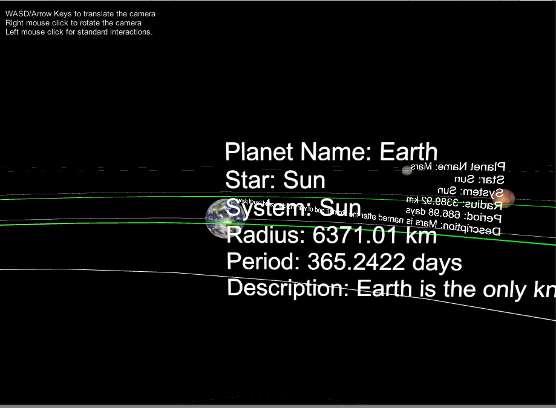

'Strawberry Fields Forever' is a VR application developed for Vive and CAVE2 that reimagines the space "Harry W Pearce Memorial Grove" in the East Campus of the University of Illinois at Chicago.
'Strawberry Fields Forever' is a project for the course CS 528, Virtual Reality at the University of Illinois at Chicago. The problem statement is available here.

Link to description
https://docs.google.com/document/d/1exbyKWw9qU6MKcPdppEDcSmbuuEvn4WDZel3CLY3kls/edit?usp=sharing
© Sai Priya Jyothula. All rights reserved.